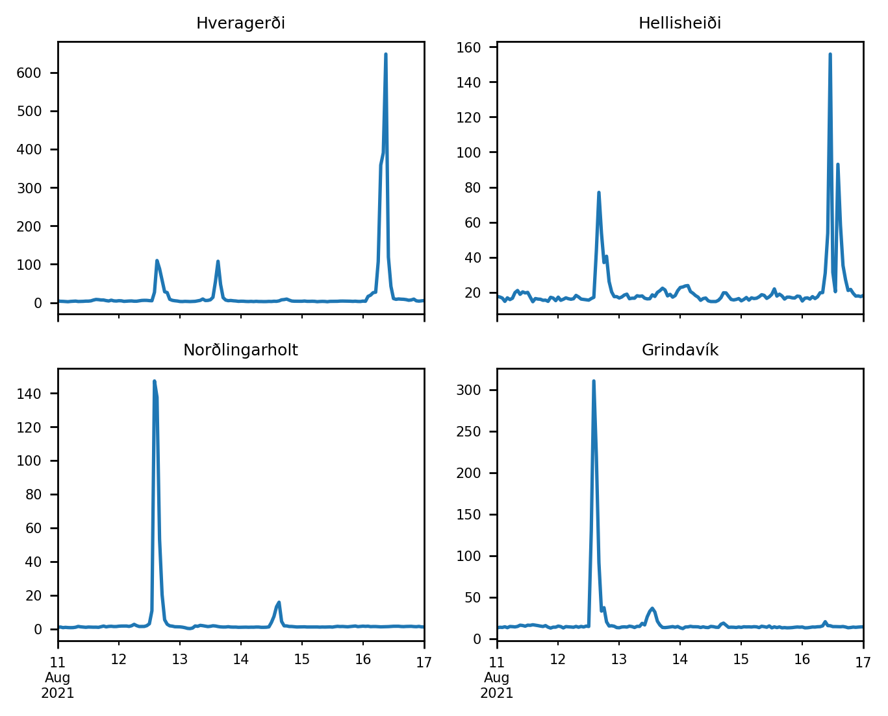
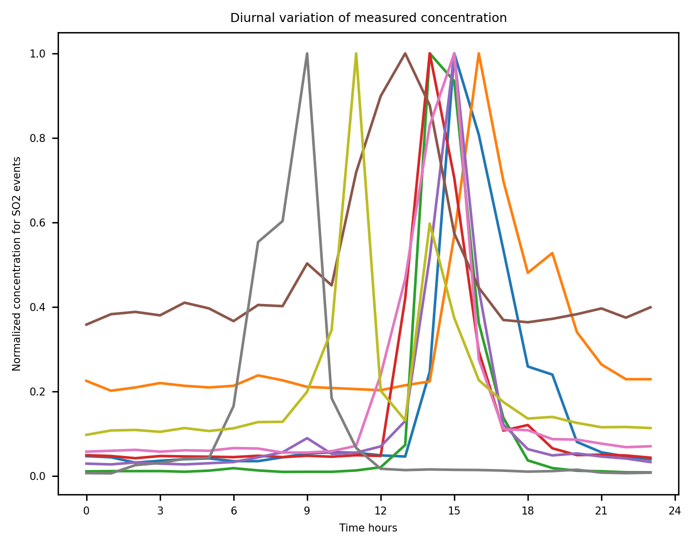
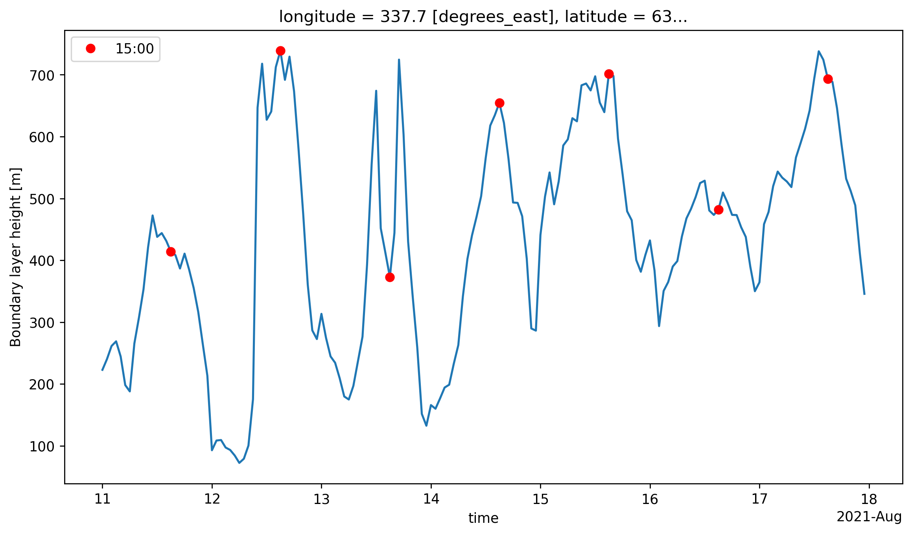
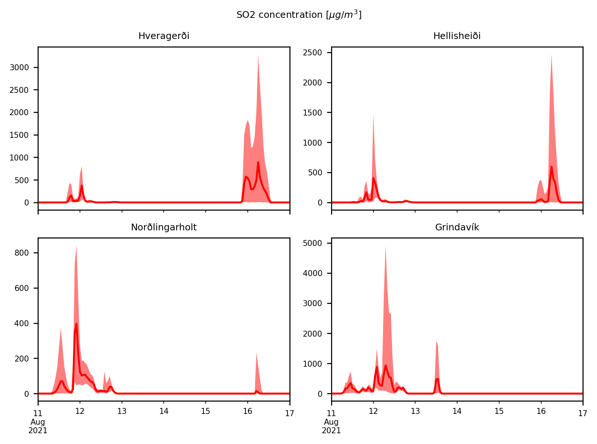
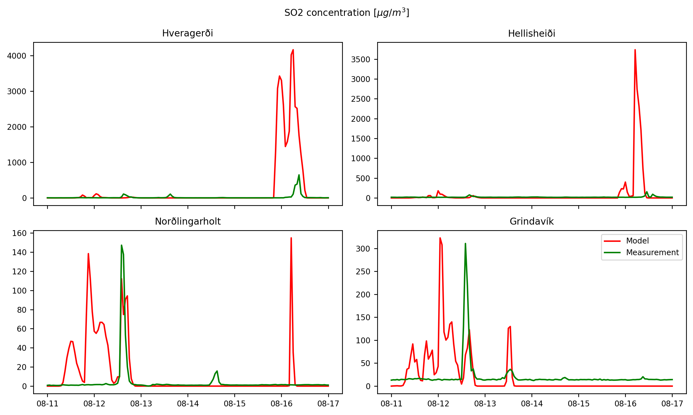

26 September 2024
Pfeffer, Melissa A., et al. “SO2 emission rates and incorporation into the air pollution dispersion forecast during the 2021 eruption of Fagradalsfjall, Iceland.” Journal of Volcanology and Geothermal Research 449 (2024): 108064. https://doi.org/10.1016/j.jvolgeores.2024.108064
We considered measurements of SO2 concentration at 4 ground stations with a radius of about 50 km between 11-Aug-2021 and 17-Aug-2021.

Concentration timeseries show a diurnal variation pattern?

Forecasts for the Boundary layer thickness show maximum heights around 15:00

We performed 70-member ensemble simulations of SO2 transport using the FALL3D model. Different source term parameters were perturbed.
| Parameter | Reference | Perturbation range |
|---|---|---|
| Suzuki-A | 4 | 3 |
| Suzuki-λ | 2 | 1.5 |
| Wind componentes | IFS on model levels | 20% |
| Column height | See figure below | 20% |
| Emission rate | Fixed (100 kg/s) | No perturbed |
Operational forecasts are produced with the ECMWF Integrated Forecasting System (IFS) with a horizontal resolution of 9 km using 137 layers in the vertical.
We explored different vertical distributions:
We performed to ensemble simulations. In experiment A, the source term is defined from a timeseries of column height estimations. In experiment B, a fixed column height is assumed (1500 m above the vent).



The linear correlation between every member and the observations was computed and the best ensemble member was selected:

Precision = TP/(TP+FP) = 25%

Precision = TP/(TP+FP) = 27%